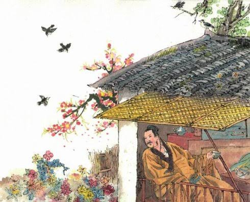

登鹳雀楼 (Dēng Guàn Què Lóu) — ขึ้นหอนกกระเรียน

ผู้แต่ง: หวังจือฮ้วน (王之涣 - Wang Zhihuan) | ราชวงศ์: ถัง (Tang Dynasty)
เนื้อความบทกวี: 白日依山尽， (Bái rì yī shān jǐn) 黄河入海流。 (Huáng hé rù hǎi liú) 欲穷千里目， (Yù qióng qiān lǐ mù) 更上一层楼。 (Gèng shàng yī céng lóu)
ดวงตะวันสีขาวคล้อยต่ำลับขอบเขาแม่น้ำฮวงโหไหลเชี่ยวกรากมุ่งสู่ทะเลลึกหากปรารถนาจะมองทัศนียภาพให้ไกลสุดสายตานับพันลี้ก็จำเป็นต้องก้าวขึ้นหอคอยไปอีกชั้นหนึ่ง
ความเป็นมา: กวีได้ขึ้นไปบน "หอนกกระเรียน" ซึ่งเป็นหอคอยที่มีชื่อเสียงในมณฑลซานซี และมองออกไปเห็นทิวทัศน์อันยิ่งใหญ่ของภูเขาและแม่น้ำฮวงโห (แม่น้ำเหลือง)
จุดเด่นทางวรรณศิลป์: สองบาทแรกเป็นการวาดภาพธรรมชาติที่กว้างใหญ่ไพศาลและมีพลัง (ดวงอาทิตย์ลับขอบฟ้า และแม่น้ำไหลลงทะเล) ส่วนสองบาทหลังได้รับการยกย่องว่าเป็น "สัจธรรมชีวิต" ที่แฝงอยู่ในบทกวี สื่อว่าหากต้องการมีความรู้ ความเข้าใจ หรือวิสัยทัศน์ที่กว้างไกลกว่าเดิม เราต้องพัฒนาตัวเองและพยายามก้าวขึ้นสู่ระดับที่สูงขึ้น ประโยค "更上一层楼" (ก้าวขึ้นไปอีกชั้น) จึงกลายเป็นสำนวนจีนที่ใช้ให้กำลังใจในการพัฒนาตนเองจนถึงปัจจุบัน